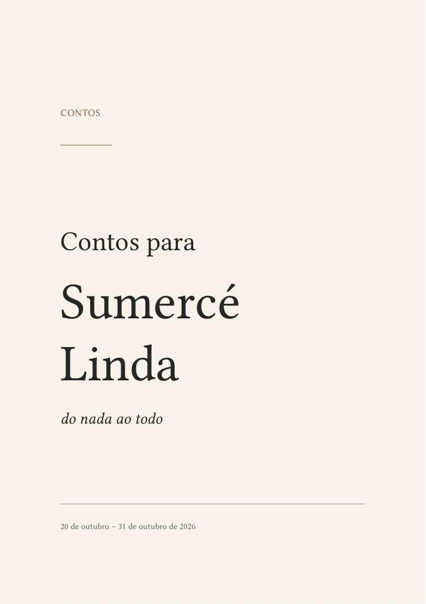

Preparando seu lugar entre as páginas…
Não foi possível abrir o livro aqui.
Escolha uma história. O resto do mundo pode esperar.
As posições indicam as páginas do arquivo PDF, incluindo a capa e a dedicatória.